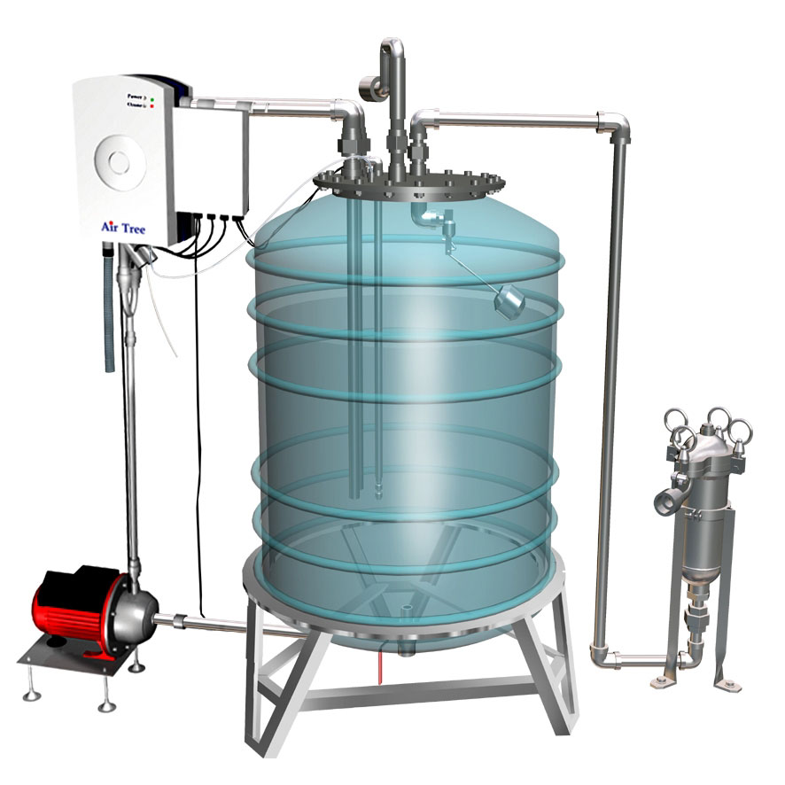

Traitement automatique de l'eau

Vous le savez, pour que l’eau de votre piscine soit claire, limpide, et saine ; il vous faut très régulièrement, analyser les données principales, tel que le pH et le taux de désinfectant.
Mais cette tâche répétitive de prévention vous lasse, vous ennuie, vous reportez au lendemain ou vous oubliez (par manque de temps, d’envie……) de faire ces contrôles, et votre piscine n’est pas aussi transparente et lumineuse que vous le voudriez, et quelques fois elle devient verte!Le traitement automatique va vous libérer des tâches laborieuses et répétitives et vous faire gagner du temps.